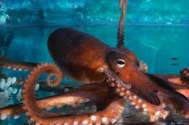

Blue Ringed Octopus
The blue-ringed octopus is only the size of a golf ball but still carries enough poison to kill 26 humans in minutes.
- Scientific Name: Hapalochlaena
- Average Length: 5cm to 15cm.
- Average Lifespan: 7 to 24 months.
- Habitat: Indian and Pacific Oceans
The Blue-Ringed Octopus is a set of four species of higly venomous octopuses. They can be identified by their yellowish skin and characteristic blue and black rings that change color dramatically when the animal is threatened. They eat small animals, including crabs, hermit crabs, shrimp, and other crustaceans.